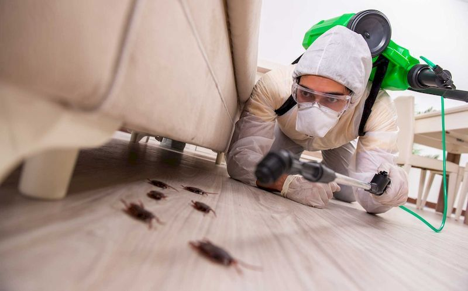

+7 (913) 614-74-46
info@sibdez-omsk.ru
СибДез
Служба дезинсекции
Главная
Услуги
Уничтожение Клопов
Уничтожение Тараканов
Уничтожение Блох
Цены
Отзывы
Вопросы
Статьи
Контакты
Вызвать СЭС
Статьи про дезинфекцию, дезинсекцию.
Полезные советы и информация от экспертов СЭС СибДез Омск.
Как проверить наличие клопов? Обработка квартиры от клопов: подробная инструкция и советы СЭС
11.12.2025
Читать далее
Опасны ли инсектициды для животных? Безопасное применение инсектицидов
11.12.2025
Читать далее
Как правильно подготовить квартиру к обработке от клопов и тараканов: Полная инструкция от СЭС Омск
10.12.2025
Читать далее
Что происходит, когда кусает клещ? Полное руководство по первой помощи и акарицидной обработке участка
11.12.2025
Читать далее
Как определить, крысы у вас или мыши? Дератизация грызунов в Омске
11.12.2025
Читать далее
Дезинфекция квартиры и дома в Омске: как защититься от вирусов и бактерий?
10.12.2025
Читать далее
Чем травить тараканов в квартире: Обзор лучших средств и почему СЭС лучше
10.12.2025
Читать далее
Как избавиться от клопов в домашних условиях: 5 народных и 3 профессиональных способа
10.12.2025
Читать далее
Как убрать запах после травли клопов и тараканов: 5 шагов к свежести
10.12.2025
Читать далее
Народные средства от тараканов: Мифы и Правда. Что реально работает?
10.12.2025
Читать далее
Акарицидная обработка от клещей в Омске с гарантией на весь сезон
11.12.2025
Читать далее
Что убивает домашних клопов?
26.11.2025
Читать далее

Профессиональное уничтожение тараканов в Омске: Холодный и Горячий туман
10.12.2025
Читать далее
Как избавиться от двухвосток (уховерток) в доме? Опасны ли они и методы профессионального уничтожения в Омске
11.12.2025
Читать далее
Интересные факты о крысах. Дератизация грызунов в Омске
11.12.2025
Читать далее
Опасны ли инсектициды для животных? Безопасное применение инсектицидов
04.05.2025
Читать далее
Как определить, крысы у вас или мыши? Дератизация грызунов в Омске
23.04.2025
Читать далее
Как проверить наличие клопов? Обработка квартиры от клопов
04.04.2025
Читать далее
Что происходит, когда кусает клещ? Акарицидная обработка участка
31.03.2025
Читать далее
Дети и укусы клещей в Омской области. Обработка участка от клещей
}],path:
24.03.2025
Читать далее
1
2
3
...
10